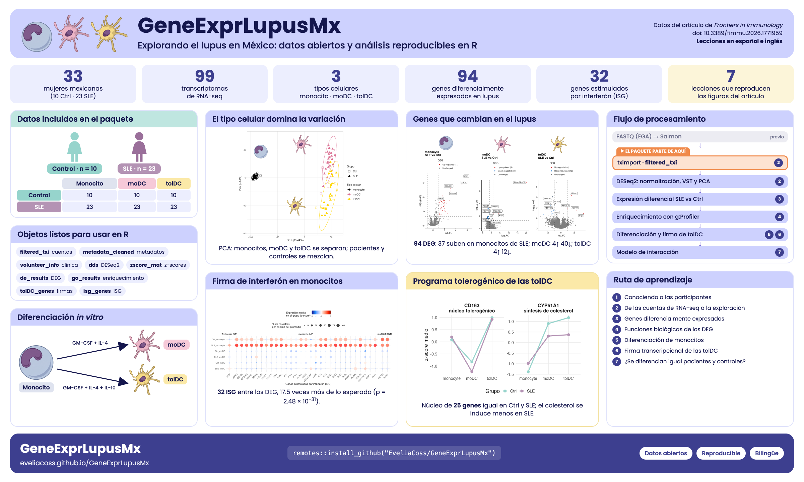

Primeros pasos con el paquete GeneExprLupusMx
Qué contiene el paquete y por dónde empezar
2026-10-31
Source:vignettes/intro_es.Rmd
intro_es.Rmd¿Qué es GeneExprLupusMx?
GeneExprLupusMx es un paquete de R con datos
transcriptómicos (RNA-seq) de mujeres mexicanas con lupus eritematoso
sistémico (LES, o SLE en inglés) y de controles sanas.
Está pensado para investigación y para enseñanza: además de los datos,
incluye lecciones paso a paso para aprender a analizarlos.
-
33 participantes: 10 controles sanas
(
Ctrl) y 23 pacientes con lupus (SLE). - 3 tipos celulares por participante: monocitos, células dendríticas derivadas de monocitos (moDC) y células dendríticas tolerogénicas (tolDC).
- 99 muestras en total (33 × 3).
Los datos provienen del artículo:
Hernández-Ledesma AL, Coss-Navarrete EL, et al (2026) Gene expression profiling of dendritic cell tolerance dysfunction in women with systemic lupus erythematosus. Front. Immunol. 17:1771959. doi: 10.3389/fimmu.2026.1771959.

Resumen del estudio y del contenido del paquete.
Instalación
Instala el paquete desde GitHub. Algunas
lecciones usan además DESeq2, disponible en Bioconductor:
install.packages(c("remotes", "BiocManager", "tidyverse"))
remotes::install_github("EveliaCoss/GeneExprLupusMx", build_vignettes = TRUE)
BiocManager::install("DESeq2")Una vez instalado, cárgalo:
¿Qué datos contiene?
El paquete incluye tres conjuntos de datos principales.
metadata_cleaned y volunteer_info están
disponibles en cuanto cargas el paquete. filtered_txi es
más grande, así que no se instala con el paquete: se descarga con
download_data() la primera vez que lo usas y después se lee
desde tu computadora.
| Objeto | Qué contiene | Una fila por | Tamaño |
|---|---|---|---|
filtered_txi |
Cuentas de RNA-seq cuantificadas con Salmon e importadas con
tximport
|
gen | 21,718 genes × 99 muestras |
metadata_cleaned |
Grupo, tipo celular y datos clínicos de cada muestra | muestra | 99 muestras |
volunteer_info |
Edad, diagnóstico, tratamientos y fecha de reclutamiento | voluntaria | 33 voluntarias |
También incluye listas de genes de referencia que usan algunas lecciones:
| Objeto | Qué contiene | Se usa en |
|---|---|---|
biotype_summary |
Biotipo de cada gen (codificante, lncRNA…) | Lección 4 |
sle_genes |
Genes asociados al lupus en la literatura | Lección 4 |
isg_genes |
Genes estimulados por interferón (Yu et al., 2025) | Lección 4 |
moDC_genes |
Genes descritos en la diferenciación de monocito a moDC | Lección 5 |
dc_genes |
Genes asociados a la diferenciación de células dendríticas | Lección 5 |
tolDC_genes |
Firma transcripcional de las células dendríticas tolerogénicas (Robertson et al., 2021) | Lección 6 |
Además, incluye checkpoints: objetos que se
construyen en una lección y se guardan en el paquete para que la
siguiente pueda empezar desde ahí, sin repetir los pasos. Los dos más
grandes, dds y zscore_mat, también se
descargan con download_data().
| Objeto | Qué contiene | Se construye en |
|---|---|---|
dds |
DESeqDataSet filtrado y normalizado (13,596 genes × 99
muestras); requiere DESeq2
|
Lección 2 |
zscore_mat |
Matriz de z-scores de la expresión VST, para heatmaps (13,596 genes × 99 muestras) | Lección 2 |
de_results |
Resultados de expresión diferencial SLE vs Ctrl de cada tipo celular
(DESeq2) |
Lección 3 |
go_results |
Términos funcionales enriquecidos de los DEG (g:Profiler, versión e113) | Lección 4 |
de_celltype_results |
Expresión diferencial de moDC y tolDC contra monocitos, en controles
y pacientes (DESeq2) |
Lección 5 |
go_celltype_results |
Términos funcionales enriquecidos de esos DEG (g:Profiler) | Lección 5 |
de_interaction_results |
Interacción Group:Cell_type: genes cuyo cambio de
monocito a célula dendrítica es distinto en las pacientes
(DESeq2) |
Lección 7 |
go_interaction_results |
Términos funcionales enriquecidos de esos genes (g:Profiler) | Lección 7 |
Un vistazo rápido a cada uno:
filtered_txi <- download_data("filtered_txi") # solo descarga la primera vez
dim(filtered_txi$counts) # genes x muestras
#> [1] 21718 99
head(metadata_cleaned[, c("sample_ID", "Group", "Cell_type")], 3)
#> sample_ID Group Cell_type
#> QR011_0 QR011_0 Ctrl monocyte
#> QR011_1 QR011_1 Ctrl moDC
#> QR011_3 QR011_3 Ctrl tolDC
head(volunteer_info[, c("Volunteer_ID", "Group", "Age_years", "Time_of_recruitment")], 3)
#> Volunteer_ID Group Age_years Time_of_recruitment
#> 1 QR011 Ctrl 25 2022-06-01
#> 2 QR013 Ctrl 23 2022-06-01
#> 3 QR014 SLE 32 2022-06-01¿Cómo se relacionan?
Las tres tablas se conectan por sus identificadores. Cada muestra
tiene un nombre como QR011_1: la primera parte
(QR011) identifica a la voluntaria y el número final, al
tipo celular (_0 = monocito, _1 = moDC,
_3 = tolDC).
flowchart LR T["filtered_txi
cuentas por gen"] -- "columnas = sample_ID" --- M["metadata_cleaned
una fila por muestra"] M -- "Volunteer_ID
(prefijo de sample_ID)" --- V["volunteer_info
una fila por voluntaria"]
# Las columnas de las cuentas están en el mismo orden que las filas de los metadatos
all(colnames(filtered_txi$counts) == metadata_cleaned$sample_ID)
#> [1] TRUE
# De muestra a voluntaria
sub("_.*", "", "QR011_1")
#> [1] "QR011"Para conocer cada columna en detalle, consulta la ayuda:
?filtered_txi, ?metadata_cleaned y
?volunteer_info.
Ruta de aprendizaje
Las lecciones están pensadas para seguirse en orden, pero cada una puede leerse por separado.
| Lección | Aprenderás a… | Datos | Tiempo |
|---|---|---|---|
| 1. Conociendo a las participantes | Describir a la cohorte con estadística descriptiva, tablas, pruebas de normalidad y comparaciones entre grupos | volunteer_info |
45 a 60 min |
| 2. De las cuentas de RNA-seq a la exploración de datos | Importar las cuentas, normalizarlas con DESeq2,
explorar genes y hacer heatmaps y PCA |
filtered_txi, metadata_cleaned,
volunteer_info
|
1 a 1.5 h |
| 3. Genes diferencialmente expresados entre pacientes y controles | Validar tipos celulares con biomarcadores, hacer expresión
diferencial con DESeq2 e interpretar volcano plots |
filtered_txi, metadata_cleaned,
zscore_mat
|
1.5 h |
| 4. Funciones biológicas de los genes diferencialmente expresados | Hacer un análisis de enriquecimiento funcional con g:Profiler, identificar genes de SLE e ISG, probar su enriquecimiento (hipergeométrica y Fisher) y correlacionar los ISG con la actividad de la enfermedad |
de_results, go_results,
sle_genes, isg_genes,
biotype_summary, zscore_mat,
metadata_cleaned, volunteer_info
|
1.5 h |
| 5. Diferenciación de monocitos a células dendríticas | Comparar células dendríticas contra monocitos, validar la diferenciación con genes conocidos y explorar rutas y metabolismo de lípidos |
de_celltype_results, go_celltype_results,
moDC_genes, dc_genes
|
1.5 h |
| 6. La firma transcripcional de las células dendríticas tolerogénicas | Evaluar las tolDC con una firma publicada, combinar z-scores y LFC, elegir la referencia correcta para comparar e identificar los genes que concuerdan con la firma |
tolDC_genes, de_celltype_results,
zscore_mat
|
1 h |
| 7. ¿Se diferencian igual las células de pacientes y controles? | Ajustar un modelo con interacción, interpretar una “diferencia de diferencias”, resumir los genes con procesos de Reactome y graficar trayectorias de expresión |
de_interaction_results,
go_interaction_results, zscore_mat,
isg_genes
|
1.5 h |
Cada lección incluye retos con su solución para practicar, y termina reproduciendo una figura o tabla del artículo.
Además, la guía Cómo
usar las funciones del paquete muestra cómo aplicar
get_heatmap_mat(), create_heatmap(),
process_go() y reduce_go_terms() a tus propios
datos.
¿Cómo citar?
Hay dos citas: una para el paquete y otra para los datos. Si usas este recurso, por favor incluye ambas.
1) Cómo citar el paquete (lecciones, funciones y objetos de R):
Coss E (2026) GeneExprLupusMx: Datos transcriptómicos de lupus en mujeres mexicanas con lecciones de aprendizaje. Paquete de R. https://github.com/EveliaCoss/GeneExprLupusMx doi: 10.5281/zenodo.23751369.
Este DOI siempre apunta a la versión más reciente; en Zenodo encontrarás el DOI de cada versión.
2) Cómo citar los datos (artículo original y análisis en Zenodo):
Hernández-Ledesma AL, Coss-Navarrete EL, et al (2026) Gene expression profiling of dendritic cell tolerance dysfunction in women with systemic lupus erythematosus. Front. Immunol. 17:1771959. doi: 10.3389/fimmu.2026.1771959.
↑ Volver a InicioCoss-Navarrete EL, Hernández-Ledesma AL, et al (2025) Analysis of gene expression profiles during tolerance induction in dendritic cells from women with Systemic Lupus Erythematosus [Data set]. Zenodo. doi: 10.5281/zenodo.17742206.